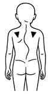
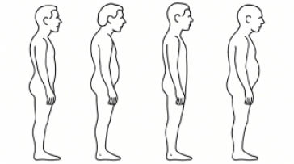

417
Rycina V.3.3.
Uproszczony schemat przedstawiający skoliozę z widoczną asymetrią kątów talii, łopatek, fałdów pośladkowych oraz garbem żebrowym
Rycina V.3.4.
Schemat przedstawiający wady postawy kręgosłupa w płaszczyźnie strzałkowej. Od lewej: plecy wklęsłe, plecy okrągło-wklęsłe, plecy płaskie i plecy okrągłe


Fizjoprofilaktyka – prawidłowa postawa ciała